悖论：两个方向相反的做法，都能涨分
RLVR 领域有两个经验结论，单独看都成立，放在一起却互相矛盾：
- spurious reward：用与答案无关的随机 reward，Qwen-Math 在 MATH500 上反而涨分
- entropy minimization：主动把 policy 压得更确定、更尖锐，数学推理同样涨分
问题在于，这两种做法的方向恰好相反
| Spurious / Random Reward | Entropy Minimization | |
|---|---|---|
| 做了什么 | 用和正确答案完全无关的随机 Bernoulli reward 训练 | 主动把 policy 压成更确定、更尖锐的分布 |
| 按经典 RL 的直觉 | 往强化信号里注入噪声，削弱 exploitation | 压缩采样多样性，抑制 exploration |
| 实际观察 | 某些设置下 validation accuracy 反而上升 | 数学推理 RLVR 中经常和涨分同时出现 |
实验底座：模型覆盖 Qwen2.5-Math 1.5B / 7B、R1-Distill-Llama-8B、QwQ-32B（base 与 distilled 都有），数据用 DeepScaleR 和更难的 AIME Past，验证看 MATH500 / AIME。GRPO 复用 Spurious Rewards 一文的配置：G=16、temperature=1.0、lr=5e-7、clip ratio=0.2。贯穿全文的对照轴只有一个，即 clipped vs. unclipped，因为后面会看到 clipping 正是串起几条线索的关键
第一种解释：clipping bias 并不构成学习信号
主流解释来自 Spurious Rewards 一文，它把 random reward 的涨分归因于 PPO 的 upper-clipping bias：clip 对高概率 token 允许更大的绝对增量，对低概率 token 则很早触顶，于是更新会系统性放大本就高概率的回答。也就是说，它在利用模型已经记住的内容（叠加 MATH500 上的 contamination），随机奖励因此也能涨分。
上述解释本身自洽，但它有一个可以直接量化的前提：clipping 引入的修正必须足够大，才称得上是学习信号。论文把这个量级算了出来，结论是它远不够大：
数值基于 Qwen2.5-Math-7B 测得
一个平均只在 0.2% token 上生效、量级又比主项小一个数量级的修正，不足以充当主要学习信号
更直接的反证（如下图所示）：如果 clipping bias 是涨分来源，关掉它就应当掉分；实验结果恰好相反，unclipped 往上升，clipped 反而经常下降
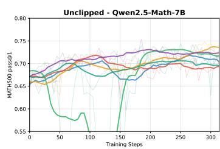
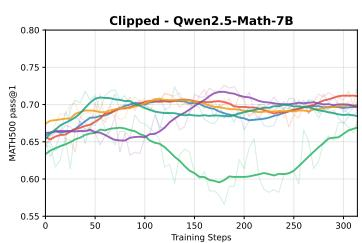
因此第一种解释可以排除：clipping bias 不提供有意义的 gradient 信号，它放大的也不是 contamination。但实验同时留下一个新问题：既然关掉 clipping 会改变曲线，clipping 显然在起作用，只是这种作用并非提供信号。那它究竟在做什么？
clipping 真正的作用：压低 policy entropy
论文的回答是：clipping 不改变 reward 信号，它改变的是 policy 更新的几何形状，最终作用在一个可观测量上，即 policy entropy。把 per-token ratio 限制在 $[1-\varepsilon, 1+\varepsilon]$，相当于缩小单步的有效步长，使分布更难展开、更容易收紧。这一步是全文的关键衔接
论文给出两个一阶结论，它们与此前 Entropy Mechanism 一文给出的 entropy 公式不同：后者在 random reward 下预测 entropy 恒定，与实验不符，原因是它只保留一阶项、且默认不带 clipping。修正后的结构是：
Without clipping
允许更大 drift，policy 保持甚至扩大探索空间
With clipping
ratio 被限制在窗口内，policy 单调趋于确定
实验与理论一致：同样的 random reward，unclipped 的 Qwen entropy 随训练上升，clipped 版本单调下降。这里也暴露出 clipping 的原始职责：unclipped 在 R1-Distill-Llama-8B 上先涨分（MATH500 65.6% → 76.6%，100 步内），约 150 步出现 gradient explosion，性能骤降。clipping 既调节 entropy，也承担 trust region 的稳定作用
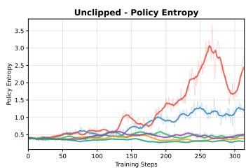
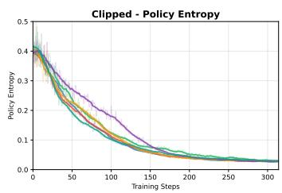
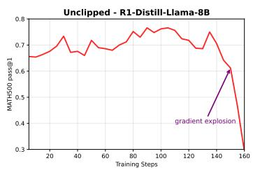
悖论到此化解
开场那两种看似相反的做法，其实是同一套机制。所谓 spurious reward 涨分，在常用的 clipped 设置下，就是让 clipping 持续压低 entropy，而这正是 entropy minimization 所做的事。两条线索在机制层重合，并不存在一个向左、一个向右的矛盾。因此真正需要问的不再是该探索还是该利用，而是下一节的问题：entropy 被压低，究竟是好事还是坏事
entropy 压到哪里，才决定它是好是坏
既然 clipped 的 random reward 本质就是在压 entropy，那 entropy 下降是否就等于变强？论文的回答是否定的。entropy 只描述 policy 有多集中，并不决定集中的方向。同样是把概率收向少数轨迹，收到正确轨迹上是涨分，收到错误轨迹上则是错得更自信。性能与 entropy 之间没有单调关系，四种组合在实验中都出现过：
entropy 高 + 涨分
unclipped 的 random reward 展开分布，帮助模型跳出过早收敛的 policy
entropy 低 + 涨分
强模型在简单数据上概率已集中于正确轨迹，进一步收紧仍有收益
entropy 低 + 崩塌
弱模型或难数据上概率集中于错误轨迹，收得越紧错得越笃定
entropy 高 + 失稳
缺少 clipping 约束时单步更新过大，gradient explosion 直接中断训练
最清楚的反例是把 Qwen2.5-Math-7B 从 DeepScaleR 换到更难的 AIME Past：超参不变，clipped random-reward 训练的 accuracy 呈现 random walk，二十个 epoch 也没有稳定改善。entropy 仍在下降，但难数据上正确 rollout 本就稀少，降 entropy 只是把概率集中到错误答案上。同一套配置在更强的 QwQ-32B、R1-Distill-Llama-8B 上却能稳定提升，差别不在 entropy 如何变化，而在概率被收向了哪里：
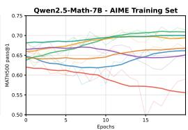
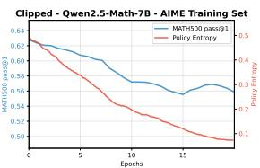
归纳起来，entropy 是机制指标，不是质量指标。它反映 policy 在收紧还是展开，却不反映收向正确还是错误的方向。因此单独用 entropy 下降作为训练在进步的证据并不成立，这也是 直接优化 entropy minimization 一类方法需要谨慎的原因
问题于是落到最后一层：概率被收向正确还是错误的轨迹，由什么决定？下一节给出一个只与单一变量有关的定量答案
概率收到哪里，由 nc 决定
论文用一个 reward misalignment 模型把这件事量化清楚。思路是：随机标签会把本应属于正确 rollout 的一部分 advantage mass 错分给错误 rollout，这部分被分错的量记作 damage。它的大小和方差只与一个量有关，即一组 rollout 中答对的个数 $n_c$（$G$ 为 group size）：
- 强模型、或数据偏简单（$n_c$ 靠近 $G$）：一组中大多数 rollout 本就正确，随机标签只能在边缘产生轻微扰动，damage 与方差都小，曲线也更平稳。此时 random reward 接近一个 regularizer
- 弱模型、或数据偏难（$n_c$ 接近 $G/2$）：对错各半，misalignment 与方差同时达到最大，随机奖励退化为噪声放大器，对应上一节 AIME 上的 random walk
还有一层更细的结构（Theorem 5.3）：同样大小的 damage，成分并不相同。$n_c>n_i$ 时，残余损失主要来自 false negative（正确 rollout 未被奖励，只是少了一次正向更新），而 false positive（错误 rollout 被错误奖励，会主动把概率拉向错误轨迹）所占比例随 $n_c$ 增大单调下降。也就是说，强模型不仅 damage 总量更小，残余 damage 也偏向影响较轻的一类，这进一步解释了强模型在 random reward 下更容易净涨分
因此 random reward 的关键从来不是奖励本身是随机的，而是它放大了 policy prior 已有的对错比例。prior 质量高时扰动表现为正则，prior 质量低时扰动表现为放大噪声。这也回答了上一节的问题：概率收向正确还是错误的轨迹，本质由 $n_c$ 决定
所以这不是 contamination 能解释的
回到主流解释的第二个支柱：Qwen2.5-Math 在 MATH500 上的涨分，会不会只是因为它训练时见过这些题（contamination），随机奖励不过是在强化记下的轨迹？若果真如此，换一个未被 MATH500 污染、但同样足够强的模型就不应涨分。论文据此验证：在多个模型家族上重复实验，让 $n_c$ 而非模型是否为 Qwen 来充当预测变量
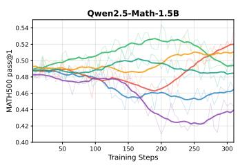
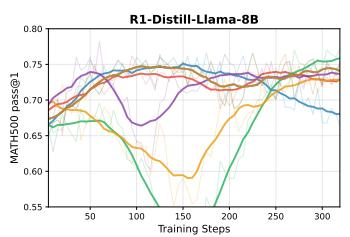
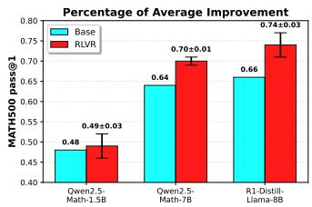
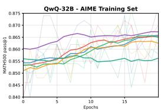
三个判断站得住：
- contamination 不足以解释：同样的涨分在 Llama、QwQ 家族也出现，单靠 MATH500 被记忆无法说明
- 真正起作用的是模型强度，而非模型家族：强模型上 random reward 表现为正则，弱模型上表现为噪声放大器，与 $n_c$ 的抛物线一致
- 强弱会随数据难度重排：在简单 benchmark 上算强的模型，换到 AIME 这类难数据，$n_c$ 可能跌回 $G/2$ 附近，优势随之消失
至此第二个解释也被排除。在排除 contamination 与 clipping bias 之后，能稳定预测 random reward 是否有效的，只剩 $n_c/G$ 这一个量
落到训练上
| 建议 | 说明 |
|---|---|
| 先量 nc，不要只看 baseline accuracy | 真正决定 random reward 是否有效的是目标数据上每组的 $n_c/G$ 分布，baseline accuracy 只是它的粗略代理。$n_c$ 普遍接近 $G/2$ 的场景，大概率会退化为噪声放大器 |
| clipping 只作稳定器，不要指望它涨分 | clipping bias 不提供学习信号，它的作用是 trust region、防止 gradient explosion，以及压低 entropy。把它当作涨分来源会导致误判 |
| entropy 必须与其他指标联合判断 | entropy 下降不等于能力提升。需同时观察 validation、采样多样性、错误模式与 gradient norm，才能区分 policy 是在收向正确轨迹还是错误轨迹 |
| random reward 当探针，而非配方 | 它本质是对 policy prior 的扰动，适合用于探索 / 正则方向的实验，不能替代 verifier |
建议联合监控的指标
把 random reward 当作 stress test，比当作 recipe 更稳妥
总结
整条链收下来，可以归纳为三点
- clipping bias 不是涨分的来源：触发率不到 0.2%，量级比主项小一个数量级，关掉它反而常常更好。它的真实作用是 trust region 与压低 entropy
- clipped 的 spurious reward 即 entropy minimization：这是悖论的解，两种看似相反的做法在机制层是同一件事，因此该探索还是该利用本身是个伪命题
- entropy 只是机制指标，nc 才是质量来源：entropy 下降既可能是收向正确轨迹，也可能是错误的 mode collapse，区分二者的是 $n_c$，它同时解释了强模型为何获益、曲线为何更稳，以及为何这与 contamination 无关